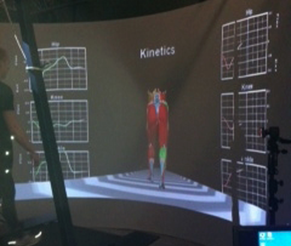

Imagine trying to determine normal or abnormal function of the leg with the naked eye in a quarter of a second. This is too difficult even for the most experienced practitioner
What Is Gait Analysis?
Gait is the pattern in which you walk or run:
Your personal step by step "cycle"
Gait Analysis is a method for examining the
"cycles", looking for variations, and
abnormal movement patterns
The Test Has Several Components:
Gait Kinematics
As the movement of the person walking is recorded by high speed video cameras a re-
constructive digital model is created in order to calculate joint motion in each plane.
Gait Kinetics
Kinetics are the forces which act across the joints.
The ground reaction force of each foot strike is measured as the person walks through
the force plate. The magnitude of the ground reaction forces can then be calculated
during different phases of the gait cycle.

Surface Electromyography
SEMG provides information about how the myscles work during walking. We can use the
SEMG data to see how each muscle acts and how it contributes to the gait abnormality.
Foot Pressure
Foot pressure is measured during walking through a specialized instrumented treadmill.
This enables a visualization of foot mechanics, timing sequence of gait cycles, 3-D pres-
sure distribution and a visualization of center of pressure (gait line).
How Is Gait Analysis Preformed?
The subject walks on the specialized walkway or instrumented treadmill. The markers are
tracking motion by multi camera motion capture system. Force plates in the walk-
way/treadmill gather kineatic data as the subject walks over them. A computer worksta-
tion equipped with motion analysis software permits the gait data to be analyzed. After
processing the gait analysis, report including video clips of your gait cycles is produced.
PICTURE 4 (Picture of subject walking through treadmill).
Who Needs Gait Analysis?
Gait analysis is extremely diagnostic for patients with lower extremity problems, patients
who have pain during walking or running. People with knee, hip, foot and ankle pain.
Athletes and runners.As well as people who have balance and instability issues during
walking. Some categories of low back pain patients could also benefit from gait analysis.
Clinical Significance of Gait Analysis
Whether you are an active sportman, recovering from an injury or simply want to enjoy
pain free mobility, gait analysis can provide valuable data for you recovery.
Gait analysis benefits include:
Provides biomechanical data about efficiency of your mobility
Provides functional reasoning why you have pain
It may identify the origin of your pain disorder not explainable
by radiological imaging
Defines treatment protocols
Speeds up rehabilitation
Provides objective monitoring of your recovery
Can rule in or rule out orthotic prescription by identifying if foot problem comes
from faulty mechanics at the hip or at the foot
Gait and running analysis is irreplaceable clinical tool in diagnosis of sport
and verse injuries
Gait analysis can help to maximize your performance, eliminante biomechanical
deficiencies and improve strength
What Pathologies Are Particularly Useful
to Diagnose and Treat Utilizing Gait Analysis
All running and overuse conditions of the hip, knee and foot !!!